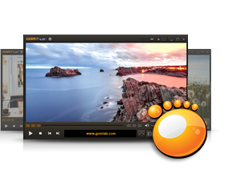

- PRODUCT
- KNOWLEDGE
- SUPPORT
- SUBTITLE
- Вход
- Регистрация
Русский
- GOM Media Player
- Owerviev
- Version History
- Announcements
- Subtitle
- Skin
- Logo
- Guide
- FAQ
- Support Center
GOM Media Player
Единственный медиаплеер, который вам
нужен - бесплатно!
Мало того, что GOM Media Player абсолютно бесплатный видео
плеер, с его встроенной поддержкой для всех наиболее
популярных видео и аудио форматов, множеством
дополнительных функций, экстремальными возможностями
настройки,а также службой Поиск кодека, GOM Media Player
несомненно удовлетворит все ваши потребности в
воспроизведении. Среди миллионов пользователей в сотнях
стран, GOM Media Player является одним из мировых самых
популярных проигрывателей.
Free Download

- Windows 8.1 / 8 / 7 / Vista / XP SP2 or higher
- Pазмер файла: 19.9 MB